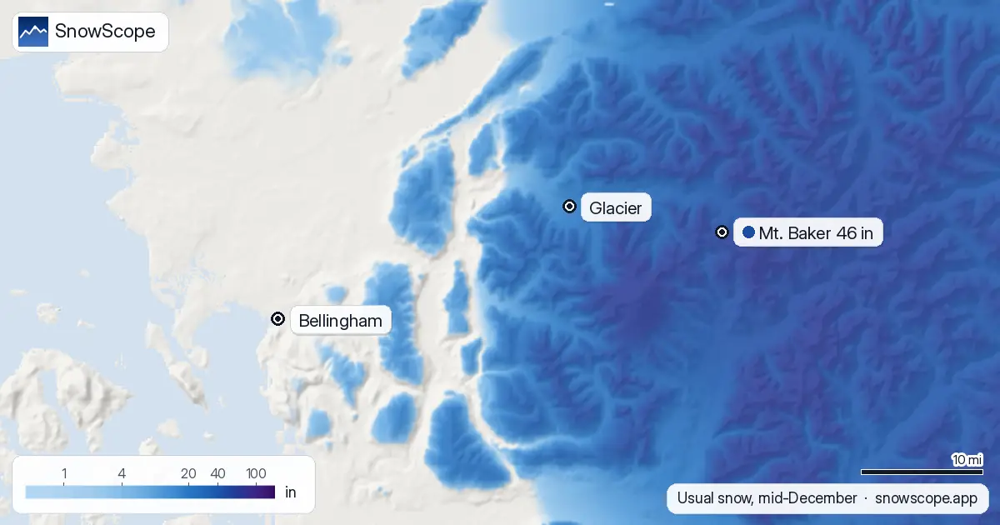

Mt. Baker ف دجنبر: رحلة بالطوموبيل رخيصة وفيها أكثر تلج ف Washington
إلا عندك غير رحلة وحدة ديال التزحلق ف دجنبر ف Northwest، سير بالطوموبيل لـ Mount Baker Highway. ف التاريخ ديالنا ديال 46 شتاء، وسط الجبل ف Mt. Baker كان فيه 20 in (50 cm) ولا كثر ديال التلج نهار 15 دجنبر ف 93% من الشتوات اللي فاتو، والفورفي ديال الكبار ف وسط السيمانة ثمنو 98.80 $، كتشريه من الكيشة نهار بنهاره.
شوف توقعات التلج مباشرة ديال Mt Baker فالتطبيق ديال SnowScopeالعلو ديال التلج، التنبيهات والخريطة 3D، فابور.آخر بلاصة هي Glacier، ومن بعد كلشي كيولي أبيض
Mt. Baker ماشي محطة-مدينة. كتسوق للشرق من Bellingham، كتعمر الگازوال ف Glacier، ومن بعد كتطلع لقاعدة ف حوالي 3,630 ft (1,106 m). المحطة صغيرة على الخريطة: 10 تيليفيريكات وحوالي 14 mi (23 km) ديال البيستات، وكتوصل لحد قريب من 5,100 ft (1,556 m). الأرقام صغيرين فالورقة، ولكن هاد الركن ديال North Cascades كيجمع التلج بزاف، شي حاجة قليلة البلايص اللي كتوصل ليها ف الـ48 ولاية.
ف شتاء عادي من التاريخ ديالنا، التلج اللي كيبقى كيوصل لوسط الجبل ف آخر أكتوبر. فالأيام الأولى ديال دجنبر، الشاليه غالبا كيكون دخل فشتاء حقيقي.

كيفاش كيكون دجنبر العادي
نهار فاتح دجنبر، الشتاء المتوسط ف التاريخ ديالنا فيه 31 in (79 cm) ف وسط الجبل، حوالي 4,370 ft (1,331 m). مع 15 دجنبر هاد الرقم كيطلع لـ28 in (72 cm) فالقاعدة، 46 in (116 cm) ف وسط الجبل و69 in (176 cm) فالقمة. نهار Noël، وسط الجبل كيوصل لـ57 in (145 cm).
الصورة ديال كل سيمانة بحالها ثابتة بزاف. النسبة ديال الشتوات اللي فيهم تلج مزيان (معدل أسبوعي ديال 20 in، 50 cm، ولا كثر) ف وسط الجبل هي 85% فالسيمانة الأولى ديال دجنبر، 91% فالثانية، 98% فالثالثة و100% فسيمانة Noël.

التيكي: بالطريقة القديمة، وأرخص من الاثنين للخميس
Mt. Baker كتخلي الأمور بسيطة. تيكي الكبار (16-59 عام) ثمنو 115.42 $ فأيام الذروة، من الجمعة للحد والأعياد، و98.80 $ فوسط السيمانة، من الاثنين للخميس برا العطل، بلا الضريبة. ماكاينش بيع أونلاين، ولا شرا مسبق، ولا تيكي ديال بزاف أيام: كتشريه غير نهار بنهاره.
هادشي كيبين الحل الاقتصادي بوضوح. رحلة نهار الثلاثاء ولا الأربعاء كتوفر ليك الفرق بين الثمنين، وكتزيدك بارك خاوي وطريق هادئة فالطريق السريع.
كيفاش كيتقارن مع White Pass و Timberline
White Pass، ف الجنوب ديال Mount Rainier، هو المنافس فالثمن: تيكي الكبار أونلاين كيبدا من 69 $ فوسط السيمانة و89 $ فأيام الذروة، ولكن كيطلع مع ما كتبيع التواريخ، لحد 99 $ و119 $. وسط الجبل ديالو كان فيه 40 in (102 cm) ف 15 دجنبر عادي، ب20 in (50 cm) ولا كثر ف 87% من الشتوات.
Timberline، ف Mt. Hood، عندو فالورقة وسط جبل أعمق، 52 in (132 cm) ف 15 دجنبر عادي، ولكن ماوصلش لـ20 in (50 cm) غير ف 78% من الشتوات، والتيكي ديال النهار الكامل ديال الكبار تما ثمنو 129 $ فوسط السيمانة و161 $ فأيام الذروة. على حساب التلج المضمون فكل دولار فبداية دجنبر، صعيب بزاف تلقى حاجة أحسن من Mt. Baker.
الجزء الصريح: كاينين سنين ضعاف
شتاء ضعيف، هاد اللي كيجي عام من كل عشرة، كيخلي تقريبا 25 in (63 cm) ف وسط الجبل نهار 15 دجنبر. الشتاء اللي فات كان من الضعاف: 16 in (42 cm) ف وسط الجبل فهاد التاريخ.
الشتوات الجداد كيبداو شوية بالبطء من القدام. فأول 15 شتاء من التاريخ ديالنا (1980-81 لـ1994-95)، القيمة الوسطى نهار 15 دجنبر كانت 52 in (131 cm) ف وسط الجبل، وكل شتاء منهم كان فيه 20 in ولا كثر. فآخر 15 شتاء (2011-12 لـ2025-26)، كانت 41 in (104 cm)، ب87% فوق 20 in. مازال رهان مزيان بزاف، ولكن ماشي شيك فارغ.
نصايح للي كيتزلجو
- خطط لرحلة من الاثنين للخميس: هو التيكي الأرخص والنهار الأهدى.
- جيب معاك كارط ولا فلوس وشري من الكيشة: التيكيات كيتباعو غير نهار بنهاره.
- دير سلاسل ولا بنوات ديال التلج ف Mount Baker Highway، وشوف حالة الطريق قبل ما تخرج من Glacier.
- استهدف وسط دجنبر ولا بعدو: من السيمانة الثالثة، غالبية الشتوات اللي فاتو كان فيهم تلج مزيان ف وسط الجبل.
- غادي تخرج من البيستات المحددة؟ قرا أولا نشرة الانهيارات الثلجية: التلج الكتير بكري يقدر يكون غير مستقر.
المراجع والمصادر
- Mt. Baker Ski Area, daily lift tickets (official) www.mtbaker.us/tickets-and-passes/daily-lift-tickets/
- White Pass, online day tickets 2026/27 (official) skiwhitepass.com/online-day-ticket-sales
- Timberline Lodge, winter lift tickets 2026/2027 (official) www.timberlinelodge.com/activities/winter/lift-tickets/
- OpenSkiMap (mapped lifts and runs) openskimap.org/
- avalanche.org, US avalanche centers and forecasts avalanche.org/
على هاد الأرقام
أرقام التلج: التاريخ ديال التلج ديال SnowScope، 46 شتوة اللي فاتت (1980-81 حتى ل 2025-26) فالعلوات المكتوبة (التحت، الوسط، الفوق)، إعادة بناء ديال التلج اللي فات لمنطقة مصححة بالعلو (على أساس ERA5-Land؛ Snow_Hydro 1 كم للمغرب)، ماشي البلاغات ديال المحطة. التلج دابا: الخريطة ديال SnowScope. التيليسييجات والبيستات والعلوات: الخرايط ديال OpenSkiMap. الأثمنة: الصفحات الرسمية اللي لتحت، متشافة نهار 13 نونبر 2026؛ الأثمنة الدينامية كتبدل مع التاريخ والطلب.
النشرات الرسمية ديال الانهيارات: avalanche.org (US national portal)
كيفاش تستاشهد بهاد المقال
للبحث، التعليم ولا الصحافة: الأرقام والرسومات تقدر تعاود تخدم بيهم بحرية تحت CC BY 4.0 مع هاد الاستشهاد.
SnowScope (2026), Mt. Baker ف دجنبر: رحلة بالطوموبيل رخيصة وفيها أكثر تلج ف Washington, https://snowscope.app/blog/ar/2026/11/mt-baker-december-ski-trip-cheap-2026.html, تشاف ف 2026-11-14
SnowScope (Atlas Labs). (2026, November 14). Mt. Baker ف دجنبر: رحلة بالطوموبيل رخيصة وفيها أكثر تلج ف Washington. SnowScope snow reports. https://snowscope.app/blog/ar/2026/11/mt-baker-december-ski-trip-cheap-2026.html
BibTeX
@misc{snowscope2026mtbakerdecemberskitripch,
author = {{SnowScope (Atlas Labs)}},
title = {Mt. Baker ف دجنبر: رحلة بالطوموبيل رخيصة وفيها أكثر تلج ف Washington},
year = {2026},
month = nov,
howpublished = {\url{https://snowscope.app/blog/ar/2026/11/mt-baker-december-ski-trip-cheap-2026.html}},
note = {Published 2026-11-14 13:07 UTC; accessed 2026-11-14}
}· CC BY 4.0 · الطريقة، الداتا والأدوات →
Mt Baker: التلج والحرارة حسب العلو، هاد الشتا مقارنة مع اللي فاتت (الأدوات) →
تابع Mt Baker
فابور: ميساج ملي يجي التلج، والتوقعات كل صباح.